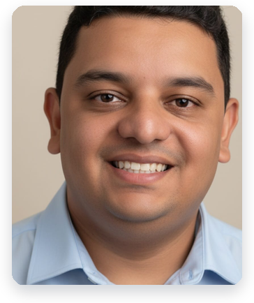

Tribunal Regional Eleitoral · Curso de Capacitação em IA
Do chat à automação supervisionada — uso produtivo e seguro de ferramentas de IA agêntica nas rotinas do judiciário
Garanta sua vaga no curso
← Voltar ao site do curso
Wesley Wagner de Brito Silva
Técnico Judiciário e Chefe de Cartório da 56ª Zona Eleitoral — TRE-PB
Formação Acadêmica
Atuação Institucional
Experiência como Instrutor
Experiência em IA e Inovação
Carga Horária
10 horas
Encontros
3 encontros
Modalidade
Telepresencial síncrona com demonstrações ao vivo
Público-alvo
Servidores do judiciário sem experiência com ferramentas de IA agêntica
Base teórica · Interfaces · Artefatos Visuais
Foco: o servidor entende o que são ferramentas agênticas, navega nas duas interfaces e já vê um artefato visual útil gerado ao vivo a partir de um documento real.
| Duração | Bloco | Descrição |
|---|---|---|
| ~30 min | Abertura e posicionamento | O que é IA agêntica, diferença do chat, por que Claude Code e Antigravity são diferentes do que já conhecem |
| ~40 min | Conceitos essenciais | Agentes, tarefas, contexto, janela de contexto, skills e tools — exemplos simples de ferramentas que o agente usa para agir no mundo, sem jargão técnico pesado |
| ~40 min | Interface do Claude Code | Navegação ao vivo: como iniciar, como dar tarefas, como o agente raciocina |
| ~40 min | Interface do Antigravity | Abordagem comparativa: onde se parece e onde diverge do Claude Code |
| ~50 min | Primeiro caso prático: artefatos visuais | Instrutor parte de um documento real e gera ao vivo: fluxograma de procedimento, resumo visual e estudo de caso interativo |
| ~25 min | Riscos essenciais | Sigilo, LGPD, alucinação e revisão humana — apresentados dentro do caso prático |
| ~15 min | Perguntas e fechamento | Síntese do encontro e antecipação do encontro 2 |
Pesquisa Jurídica · Análise de Processo · Profundidade Agêntica · Skills Prontas
Foco: o servidor usa as ferramentas em tarefas de maior complexidade e descobre que plataformas agênticas alcançam profundidade que o chat não consegue.
| Duração | Bloco | Descrição |
|---|---|---|
| ~30 min | Pesquisa jurídica assistida | Pesquisa com fontes verificáveis, verificação de resultados e como evitar jurisprudência inventada |
| ~40 min | Análise de processo | Análise de peças ao vivo: extração de fatos, linha do tempo e questões relevantes |
| ~45 min | Demonstração: case de profundidade agêntica | Projeto real do instrutor mostrando como plataformas agênticas alcançam o que o chat não consegue produzir |
| ~40 min | Skills prontas do Claude Code | O que são, como acionar e como usar em rotinas do judiciário |
| ~15 min | Skills do Antigravity | Equivalente no Antigravity — comparação de capacidades entre as duas plataformas |
| ~10 min | Fechamento | O que o servidor já consegue fazer e o que vem no encontro 3 |
Skills Personalizadas · Projeto Prático · Horizonte do Possível
Foco: o servidor vê o horizonte do que é possível construir, cria uma skill personalizada e acompanha a construção de um projeto real ao vivo.
| Duração | Bloco | Descrição |
|---|---|---|
| ~40 min | Criação de skills personalizadas | Como criar uma skill do zero para uma rotina do judiciário — demonstração completa com o instrutor |
| ~50 min | Projeto prático ao vivo | Mini-software construído ao vivo com Claude Code para uma rotina real do judiciário. O tema é revelado apenas no encontro — faz parte da experiência do curso. |
| ~50 min | Horizonte do possível | Projeto agêntico completo do instrutor mostrando o que é possível alcançar com domínio progressivo dessas ferramentas |
| ~40 min | Fechamento do curso | Síntese da jornada, próximos passos, onde aprender mais e perguntas finais |
Nota sobre revisão humana: Todo o uso de IA agêntica abordado neste curso pressupõe supervisão e revisão humana. As ferramentas ampliam a capacidade do servidor, mas não substituem o julgamento profissional, a responsabilidade funcional e o cumprimento das normas institucionais de sigilo e proteção de dados.